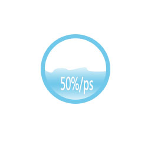
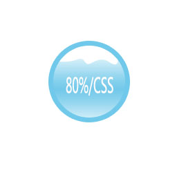
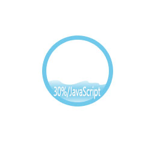

基本信息/Basic information
- 20岁（1995.11）
- 186-4983-1528
- 18649831528@163.com
- 福建省漳州市
应用工具/Software Skills
- 
-

- 
- 
教育背景/Educational background
| 时 间 | 学 校 | 学 历 | 专 业 |
| 2013年9月至今 | 福建工程学院 | 本科 | 信息管理与信息系统 |
技能证书/skills and certificates
| 时 间 | 描 述 |
| 2014.12 | 通过英语四级考试/CET4 |
| 2015.03 | 通过全国高等学校非计算机专业计算机水平考试贰级（VF），成绩优秀 |
| 2016.01 | 通过计算机操作员三级/高级技能考试。熟练使用办公软件如EXCEL函数，能制作优秀ppt。 |
| 熟悉HTML、css,标签及布局；了解js,github。 |
个人经历/Personal experience
| 2015.07-2015.08：在厦门百脑汇3C06技嘉金牌主板，做销售、组装、 装系统全套工作；以及黑蓝屏、硬盘问题等维修 | 2016.01-2016.02：福建省诏安县海利水产有限公司文员，负责打印、文件收发、ppt制作等工作 | |||
| 通过计算机操作员三级/高级技能考试。熟练使用办公软件如EXCEL函数，能制作优秀ppt |
| 2015.07-2015.08：在厦门百脑汇3C06技嘉金牌主板，做销售、组装、 装系统全套工作；以及黑蓝屏、硬盘问题等维修 | |
| 2016.01-2016.02：福建省诏安县海利水产有限公司文员，负责打印、文件收发、ppt制作等工作 | |
| 通过计算机操作员三级/高级技能考试。熟练使用办公软件如EXCEL函数，能制作优秀ppt |
自我评价/Self-appraisal
个人勤奋好学，喜欢通过各种书籍、教学视频及网站学习。
曾经在w3c、慕课网、我要自学网、极客
、百度前端技术学院、后盾学习，并坚持着。个人学习能力较强。
能处理好身边的事和人的关系并且有自己的原则，自觉遵守公司纪律，愿意服从集体利益的需要。 对工作认真严谨，有上进心，有责任心，有较强的团队合作意识。
善于制作ppt,曾经管理学实践演讲中，评委老师对所做ppt赞不绝口，并给与加分。